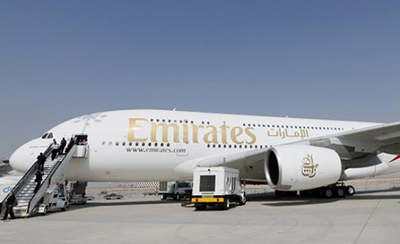

Las autoridades estadounidenses, alegando por un riesgo de atentados terroristas, anunciaron el martes la prohibición de notebooks y tablets en la cabina de los vuelos de nueve compañías aéreas procedente de ocho países del Medio Oriente.
Las compañías tienen cuatro días, a partir de ayer, para prohibir a los pasajeros que embarquen con aparatos electrónicos que son mayores a un teléfono celular.
Estos dispositivos, como consolas, libros electrónicos, cámaras de fotos, entre otros, deberán incluirse en el equipaje que va en la bodega del avión.
“El examen de los servicios de inteligencia indica que grupos terroristas siguen apuntando al transporte aéreo y buscan nuevos métodos para perpetrar sus atentados, como disimular explosivos en bienes de consumo”, explicó uno de los responsables estadounidenses.
“Basándose en estas informaciones”, el secretario para la Seguridad Interior, John Kelly, “decidió que era necesario reforzar los procedimientos de seguridad para los pasajeros con salida directa de algunos aeropuertos y con destino Estados Unidos”, agregó otro responsable, sin detallar con qué informaciones precisas contaba Washington.
Las nueve aerolíneas afectadas son Royal Jordanian, EgyptAir, Turkish Airlines, Saudi Airlines, Kuwait Airways, Royal Air Maroc, Qatar Airways, Emirates y Etihad Airways, con salida de diez aeropuertos internacionales (Amán, El Cairo, Estambul, Yeda, Riad, Kuwait, Doha, Dubái, Abu Dabi y Casablanca).